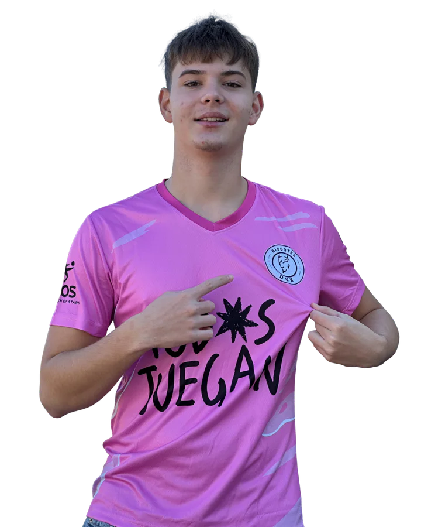

Club de fútbol · Madrid
Bisontes DUX
La manada · Temporada 2026 · Madrid · España
♟ Temporada 2026

10
Tekiela
Delantero centro
La manada · Temporada 2026 · Madrid · España

Bisontes DUX es un club de fútbol de Madrid nacido en 2025. Somos la manada: un grupo de jugadores que comparte vestuario, esfuerzo y ganas de crecer juntos.
El club se sostiene sobre tres ideas que repetimos en cada entrenamiento y cada partido: compromiso, equipo y pasión. Para nosotros esto no es solo fútbol; es identidad, barrio y comunidad.
Nuestro patrocinador principal es Todos Juegan, una asociación sin ánimo de lucro que busca equipos para jóvenes en riesgo de exclusión. Nos acompañan también colaboradores como Fratelli D'Italia, Alcze, ISOS y PcFactory.
Somos un club abierto: si quieres jugar con nosotros, apoyarnos como empresa o simplemente seguir a la manada, aquí tienes tu sitio.
Jugadores y cuerpo técnico forman la plantilla de Bisontes DUX. Cada tarjeta enlaza a su ficha oficial con dorsal, posición y datos disponibles.


Cada entrenamiento, cada partido. Al 100% siempre, sin excusas ni medias tintas.
El bisonte no corre solo. La fuerza está en el grupo, en el vestuario, en la calle.
Esto no es solo fútbol. Es identidad, barrio, comunidad. El bisonte lleva Madrid en las venas.
¿Tu empresa quiere apoyar al club? Descubre cómo patrocinar Bisontes DUX
Síguenos en Instagram
Resultados en directo, convocatorias, momentos del vestuario y la vida del club. Todo en nuestro Instagram.
Ver en InstagramMándanos tus datos y nos ponemos en contacto contigo.